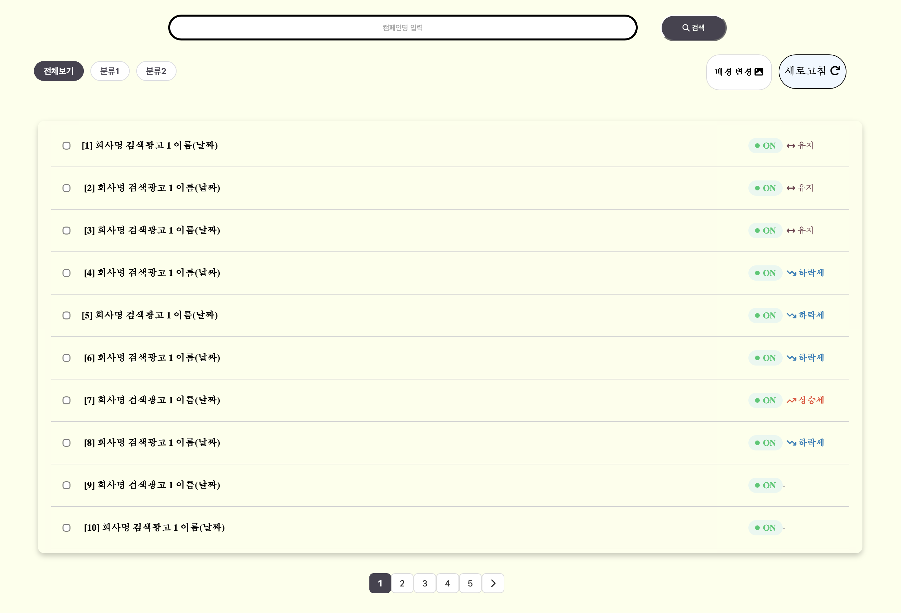
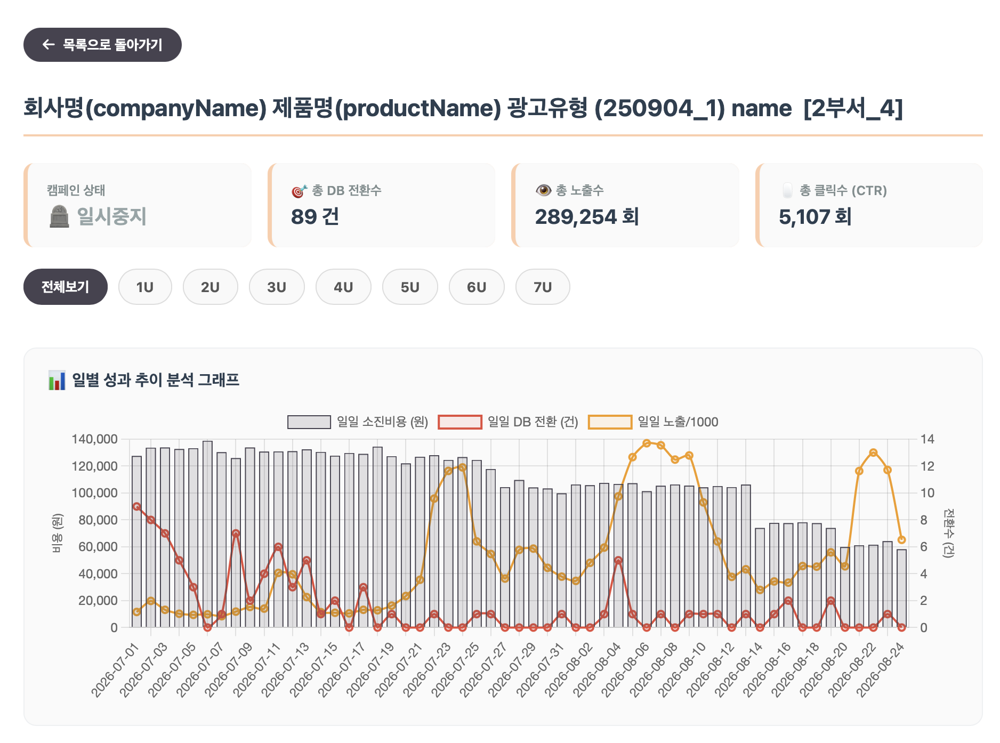
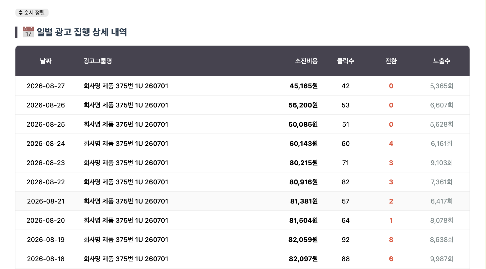
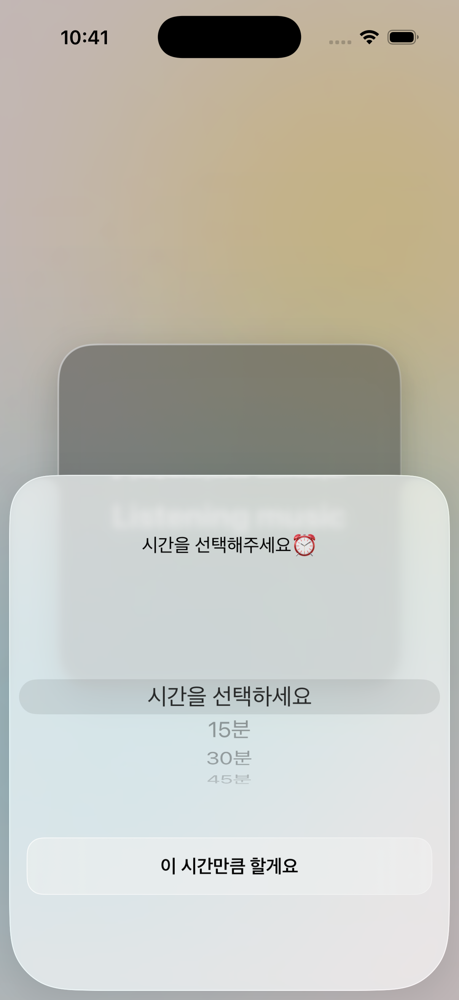
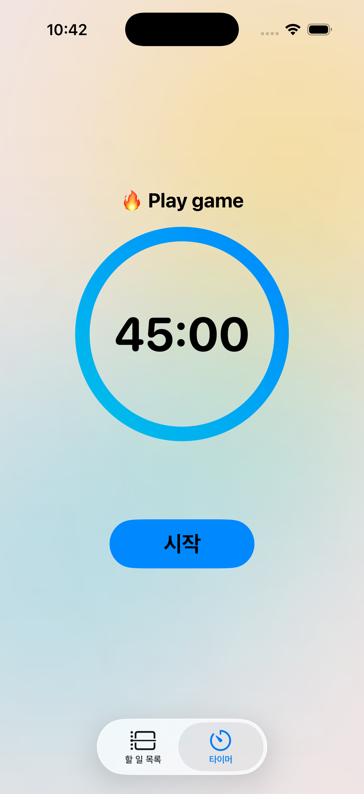

익숙한 불편함을 편리한 일상으로
문제를 집요하게 관찰하고,
더 나은 효율을 직접 만들어 냅니다.

Get in touch

엑셀의 빼곡한 텍스트 데이터는 직관적인 흐름 파악을 방해하고 있었습니다.
이를 해결하고자 웹 대시보드를 직접 구축해 수치 데이터를 실시간 시각화하고,
기존에 간과되던 세부 지표까지 한눈에 볼 수 있도록 바꿨습니다.
특히 데이터 변동 패턴을 바탕으로 '캠페인 생애주기' 개념을 새롭게 정의하여,
각 캠페인의 수명을 정량적으로 측정하고 최적의 교체 시점을 선제적으로 관리했습니다.
다수의 광고 캠페인을 효율적으로 총괄·제어할 수 있는 광고 캠페인 통합 목록 및 생애주기 관리 리스트 화면입니다.
상단의 실시간 검색창과 분류별 필터링 기능을 통해 원하는 캠페인을 신속하게 탐색할 수 있으며,
각 캠페인의 온/오프(ON/OFF) 상태와 더불어 데이터 추이에 기반한 '상승세·유지·하락세' 생애주기 지표를 뱃지 형태로 직관화했습니다.
이를 통해 성과가 저하되는 캠페인을 사전에 감지하고 즉각 조치할 수 있도록 지원하여,
일일이 수작업으로 검토하던 캠페인 모니터링 공수를 대폭 절감했습니다.


엑셀 기반의 방대한 텍스트 데이터를 직관적으로 파악하기 위해 직접 기획·구축한 퍼포먼스 마케팅 성과 분석 대시보드입니다.
상단 KPI 요약 카드와 원클릭 유닛 필터로 핵심 성과를 즉각 인지할 수 있도록 설계했으며,
하단에는 일일 소진 비용, DB 전환수, 노출수의 상관관계를 시계열로 비교하는 다중 축 그래프를 구현했습니다.
이를 통해 비용 대비 전환율 변동과 캠페인 생애주기 패턴을 정량적으로 추적하여,
비효율 광고 교체 및 예산 최적화 의사결정을 선제적으로 지원합니다.
일자별 광고 집행 성과를 투명하게 모니터링할 수 있는 일별 광고 집행 상세 내역 테이블 화면입니다. 날짜, 광고그룹명과 함께 소진비용, 클릭수, 전환수, 노출수 등 세부 핵심 수치를 직관적인 표 형태로 구조화하였으며, 일자별 오름차순/내림차순 정렬 기능을 더해 데이터 탐색 편의성을 높였습니다. 특히 핵심 성과 지표인 전환수 수치를 강조 표기(하이라이팅)하여 특정 일자의 성과 이상치나 전환 효율의 급격한 변동을 즉각 식별하고 신속하게 대응할 수 있도록 구현했습니다.


